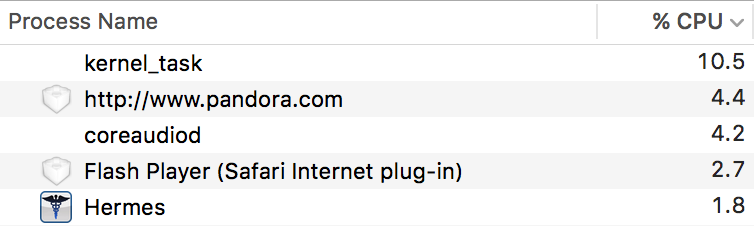

Fast

Hermes beats Flash, hands down.
Free
Even if you don’t subscribe to Pandora One, Hermes is and
always will be open source and free for everyone.
Usable
Hermes pauses music when your computer sleeps and doesn’t
resume on wake. It recovers from errors and picks up the song
right where playback left off.
Features
Like and dislike songs; create, edit and delete stations. Enjoy
last.fm integration and song notifications which just
aren’t possible with Pandora.